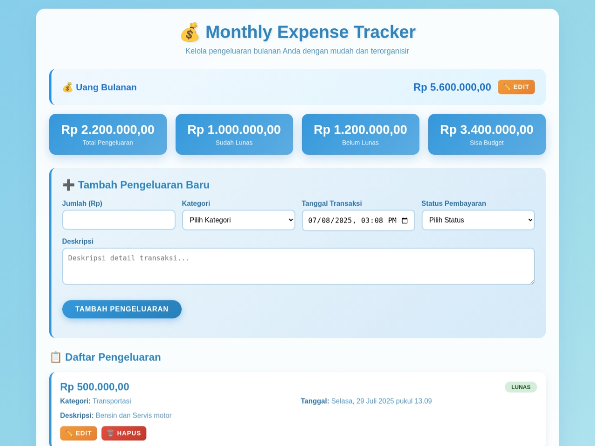
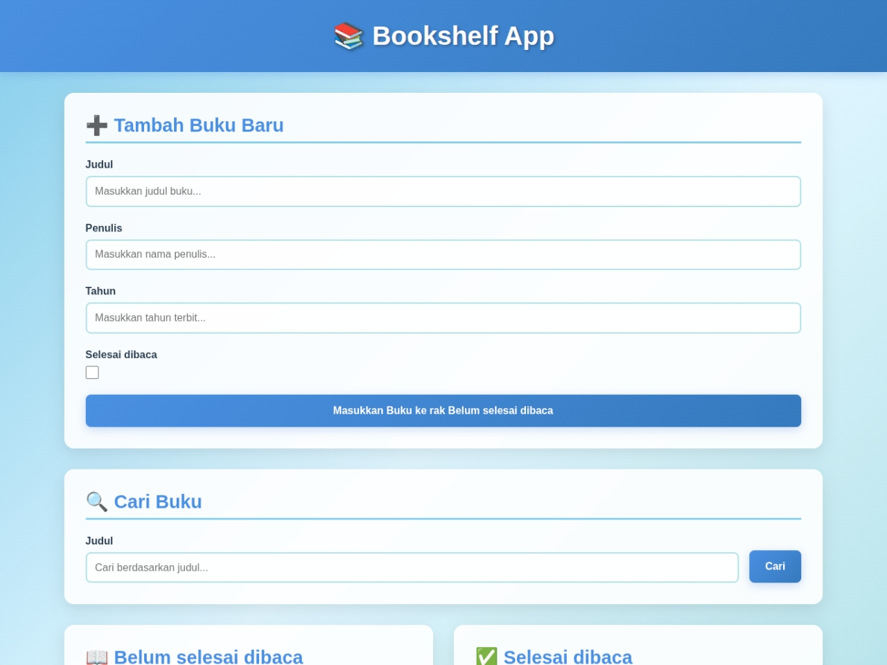
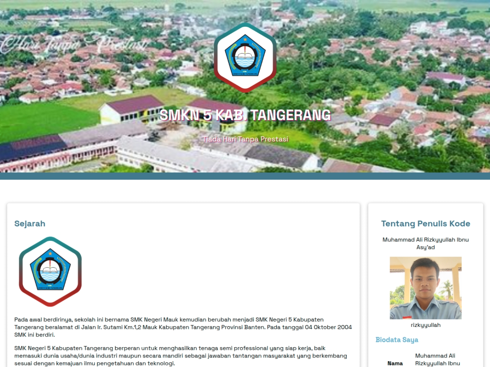
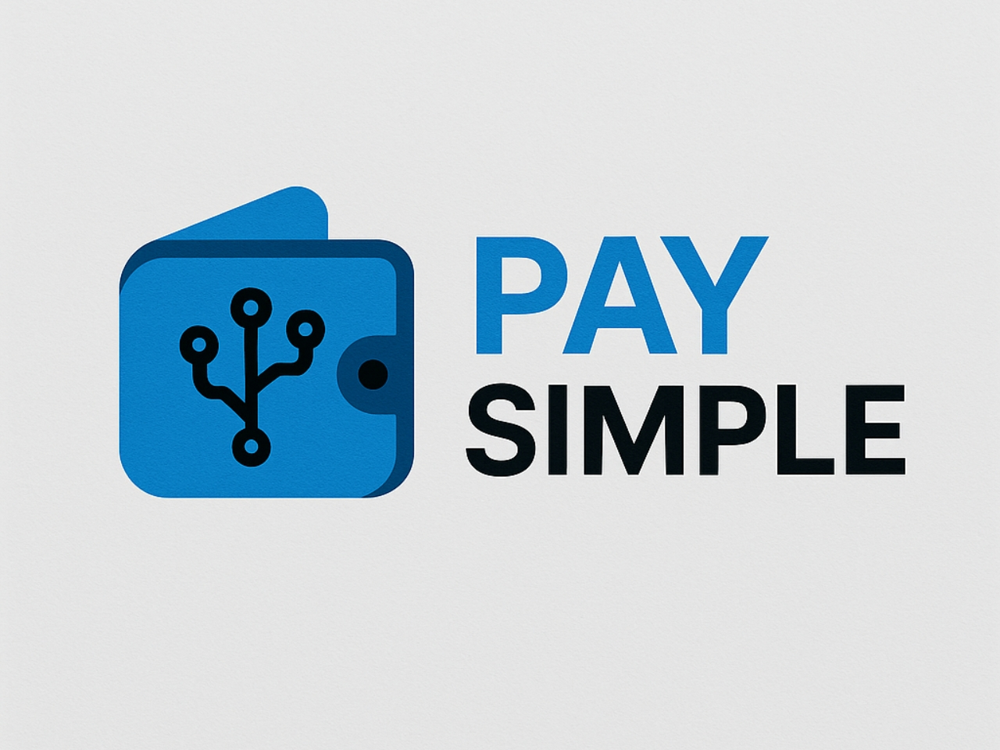

"The people should not fear their government. The government should fear their people."
As an exploratory Web Developer, I started my journey from building simple landing pages to designing backend systems for more complex projects. I believe that expertise is not just about mastering technology, but also about understanding user needs and turning them into powerful digital experiences. In every line of code, I try to bring a touch of detail and clarity.
I actively use HTML, Tailwind CSS, JavaScript, and Express as the foundation of my work. Some of my projects involve school website design to backend systems, and all of them are done with a high spirit of self-learning. Currently, I'm also working on React and honing my public speaking, logical thinking, and critical thinking skills to support communication and problem solving in the workplace.
Outside of coding, I love the world of Assassin's Creed especially Unity, that's why the theme of this portfolio was inspired by the game, and from that game I learnt a lot about problem solving, reaserch and information analysis, adaptability, strategic planning, and teamwork. That's what I bring to the world of Web Development. I believe that with every difficulty comes an opportunity, and that's why I utilise my free time to grow not only as a developer, but also as a person.
Monthly Expense Tracker Image

Aplikasi manajemen keuangan pribadi dengan antarmuka glassmorphism yang memungkinkan pengguna mengatur budget bulanan, mencatat transaksi berdasarkan kategori, dan memantau status pembayaran dengan sistem peringatan otomatis. Dilengkapi dengan dashboard real-time yang menampilkan statistik pengeluaran dan sisa budget dengan desain responsif modern.
Digital Bookshelf Manager Image

Platform manajemen koleksi buku digital dengan sistem rak virtual yang memisahkan buku "belum selesai dibaca" dan "selesai dibaca" secara otomatis. Menampilkan modal interaktif untuk edit/hapus buku, fitur pencarian real-time, dan notifikasi yang elegan dengan desain nuansa biru langit yang menenangkan.
School Profil Website Image

Website profil institusi pendidikan SMKN 5 Kabupaten Tangerang dengan slideshow multimedia interaktif dan navigasi hamburger menu responsif. Menyajikan informasi lengkap sejarah sekolah, 14 ekstrakurikuler, dan 10 konsentrasi keahlian dengan desain modern yang mengutamakan pengalaman pengguna di berbagai perangkat.
Payment Simulation API Image

RESTful payment gateway simulation dengan arsitektur clean code, mendukung registrasi merchant/customer, manajemen produk, transaksi real-time, dan sistem balance dengan PostgreSQL. Dilengkapi autentikasi JWT, middleware logging, dan dokumentasi API yang lengkap untuk simulasi ekosistem pembayaran digital.